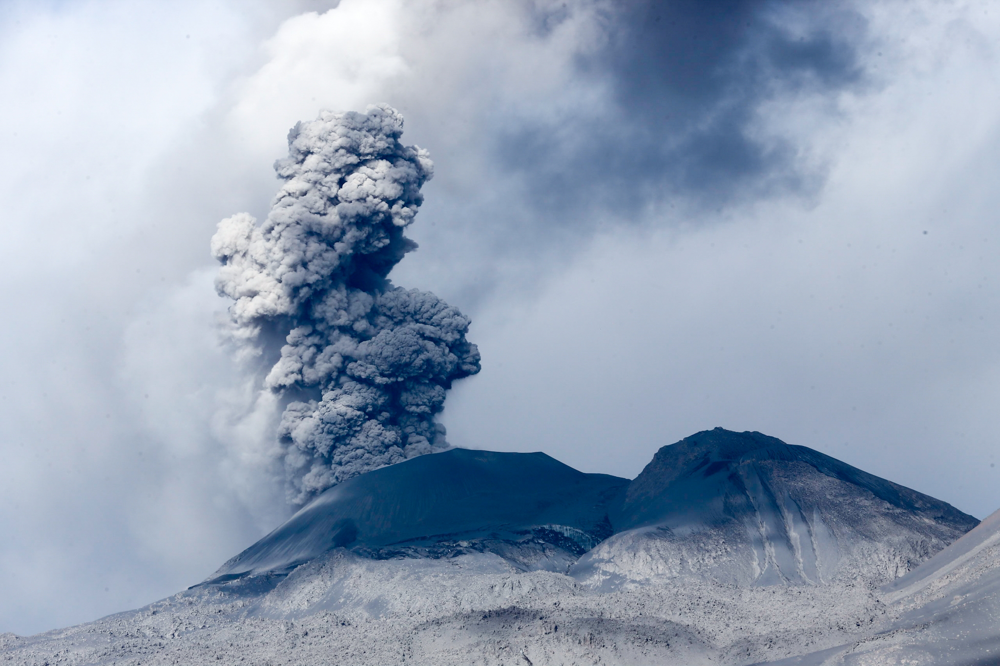
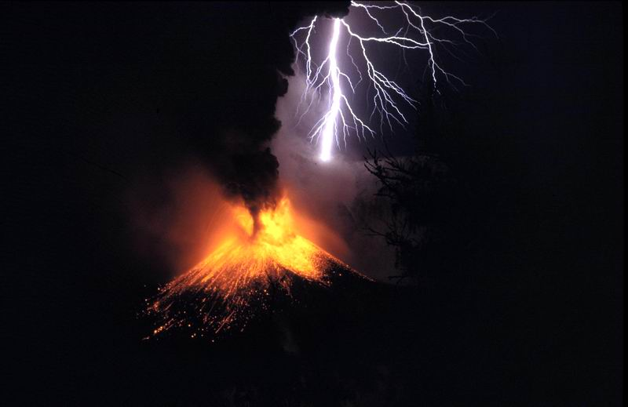

A volcano is a rupture in the crust of a planetary-mass object, such as Earth, that allows hot lava, volcanic ash, and gases to escape from a magma chamber below the surface.On Earth volcanoes are most often found where tectonic plates are diverging or converging, and most are found underwater.
For example, a mid-ocean ridge, such as the Mid-Atlantic Ridge, has volcanoes caused by divergent tectonic plates whereas the Pacific Ring of Fire has volcanoes caused by convergent tectonic plates. Volcanoes can also form where there is stretching and thinning of the crust's plates, such as in the East African Rift and the Wells Gray-Clearwater volcanic field and Rio Grande rift in North America. Volcanism away from plate boundaries has been postulated to arise from upwelling diapirs from the core–mantle boundary, 3,000 kilometers (1,900 mi) deep in the Earth. This results in hotspot volcanism, of which the Hawaiian hotspot is an example. Volcanoes are usually not created where two tectonic plates slide past one another. Large eruptions can affect atmospheric temperature as ash and droplets of sulfuric acid obscure the Sun and cool the Earth's troposphere. Historically, large volcanic eruptions have been followed by volcanic winters which havecaused catastrophic famines.[1]
The most common perception of a volcano is of a conical mountain, spewing lava and poisonous gases from a crater at its summit; however, this describes just one of the many types of volcano. The features of volcanoes are much more complicated and their structure and behavior depends on a number of factors. Some volcanoes have rugged peaks formed by lava domes rather than a summit crater while others have landscape features such as massive plateaus. Vents that issue volcanic material (including lava and ash) and gases (mainly steam and magmatic gases) can develop anywhere on the landform and may give rise to smaller cones such as Puʻu ʻŌʻō on a flank of Kīlauea in Hawaii.
Other types of volcano include cryovolcanoes (or ice volcanoes), particularly on some moons of Jupiter, Saturn, and Neptune; and mud volcanoes, which are formations often not associated with known magmatic activity. Active mud volcanoes tend to involve temperatures much lower than those of igneous volcanoes except when the mud volcano is actually a vent of an igneous volcano.